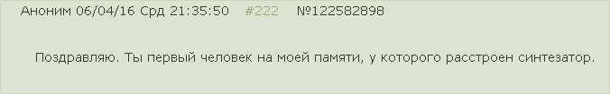

Фохроер композитор
О композиторе
Я долго тренировался, прежде, чем преставить вам альбом "Мне не холодно". Старательно писал электронную музыку.
Была проделана продуктивная работа: я 4.5 года оттачивал своё музыкальное умение и чутьё, 1.5 года изучал мастеринг,
аккуратно и неторопливо делал музыкальные композиции и вот — перед вами альбом "Мне не холодно".
Одну песенку пишу, другую сочиняю. По поводу моей музыки: я второоткрыватель своего жанра.
Но и первооткрываетем был также я.
Альбомы распространяются по лицензии Creavite Commons (а именно CC BY-NC-SA 4.0) с допуском на создание производных,
но я не слишком приветствую подобную деятельность.
Альбом Артикс дался мне легче и получился длиннее. Неожиданный поворот был получен для него —
я думал, что трек №13 был сделан совместно с Diatonator, однако сам Diatonator опроверг это. Такие дела.
Собрав свои силы и волю в солнечное сплетение,
я сумел выпустить альбом "Необычайная лёгкость". Это мой максимум. Я очень доволен результатом!
Как человек слова, я выпустил этот альбом! Как человек слова, я ещё и спел!
Что ж, поглядим, может на на эту страницу поступят ещё и другие альбомы. Но надо полагать, что это уже конец.
Стоит верить, что в следующем альбоме вы услышите, как я могу выдавать вокал в очень редком диапазоне.
Как робот, как дикий зверь леопард, да и вообще я могу делать wobble бас без использования какой-либо техники,
а только используя возможности своего организма. Сейчас провожу необходимые эксперименты.
На данный момент музыкой занимаюсь уже 5 лет.
Если хотите заниматься электронной музыкой, я рекомендую вам использовать только легковесные VST плагины
и не пренебрегать использованием бесплатных. Например, у меня папка VSTPlugins занимает около 1 Гб.
Жизнь — это музыка. Больше басов — больше могущества. Но это лёгкий путь!
Я же выбрал тяжёлый и добиваюсь могущества на высоких частотах. Как раз такое императорство слышат любые уши.
Примечание
Если скачали zip архив с GitHub, то MD5 сумма не сойдётся!
{kind=link}

Фохроер - Мне не холодно
Дата выпуска альбома: 10 ноября 2015 года
MD5 сумма: 8d5eaa981dd280d2d454261eecae910f neholodno.zip
Скачать или прослушать на Bandcamp

Прослушать альбом на SoundCloud (без регистрации)
Скачать архив с Яндекс.Диска (24 битные FLAC файлы)

Скачать архив с Google Диска (24 битные FLAC файлы)

Скачать архив с Dropbox (24 битные FLAC файлы)

Скачать архив с GitHub (24 битные FLAC файлы)
Прослушать альбом на SoundCloud (без регистрации)
Скачать архив с Яндекс.Диска (24 битные FLAC файлы)
Скачать архив с Google Диска (24 битные FLAC файлы)
Скачать архив с Dropbox (24 битные FLAC файлы)
Скачать архив с GitHub (24 битные FLAC файлы)
{kind=link}
Фохроер - Артикс
Дата выпуска альбома: 20 апреля 2016 года
MD5SUM: c5b882eab9daf15d6a4ce2d1d079d423 Artix.zip
Скачать или прослушать на Bandcamp
Прослушать альбом на SoundCloud (без регистрации)
Скачать архив с Яндекс.Диска (24 битные FLAC файлы)
Скачать архив с Google Диска (24 битные FLAC файлы)
Скачать архив с Dropbox (24 битные FLAC файлы)

Скачать архив с Github (24 битные FLAC файлы)
Прослушать альбом на SoundCloud (без регистрации)
Скачать архив с Яндекс.Диска (24 битные FLAC файлы)
Скачать архив с Google Диска (24 битные FLAC файлы)
Скачать архив с Dropbox (24 битные FLAC файлы)
Скачать архив с Github (24 битные FLAC файлы)
{kind=link}
Фохроер - Необычная лёгкость
Дата выпуска альбома: 16 июня 2016 года
MD5SUM: ec0ed3db73fb1273162e108843266cbe Neoble.zip
Скачать или прослушать на Bandcamp
Прослушать альбом на SoundCloud (без регистрации)
Скачать архив с Яндекс.Диска (24 битные FLAC файлы)
Скачать архив с Google Диска (24 битные FLAC файлы)
Скачать архив с Dropbox (24 битные FLAC файлы)
В этот раз без GitHub, потому что слишком большие файлы.
Прослушать альбом на SoundCloud (без регистрации)
Скачать архив с Яндекс.Диска (24 битные FLAC файлы)
Скачать архив с Google Диска (24 битные FLAC файлы)
Скачать архив с Dropbox (24 битные FLAC файлы)
В этот раз без GitHub, потому что слишком большие файлы.О благородный витязь, да не будет скупа твоя рука, да прими мои дары, да раскрой свою мошну и да щедрой будет твоя благодарность!
Пожертвовать за альбом "Мне не холодно":
Пожертвовать с банковской карты или счёта Яндекс.Денег
Пожертвовать за альбом "Артикс":
Пожертвовать с банковской карты или счёта Яндекс.Денег
Пожертвовать за альбом "Необычайная лёгкость":
Пожертвовать с банковской карты или счёта Яндекс.Денег
Пожертвовать Bitcoin: 1F5PKEzP8hF6Z1H4H5n9XfVsjnMVW1tyqz
{kind=link}